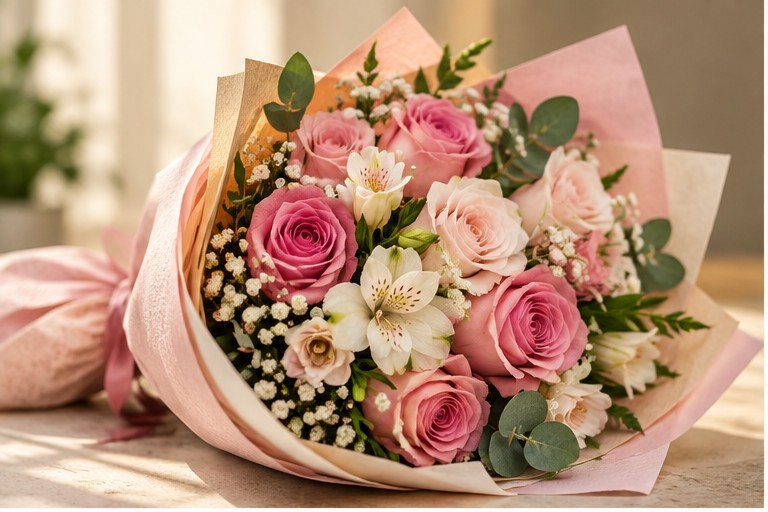
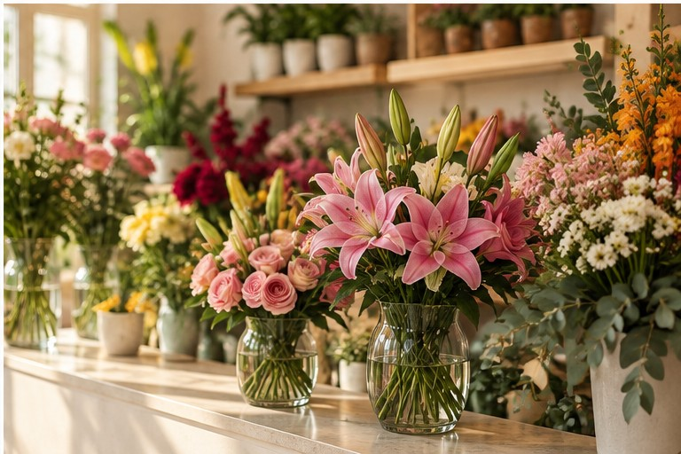
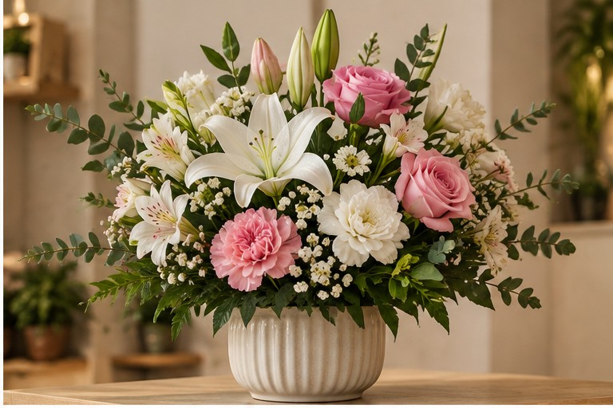
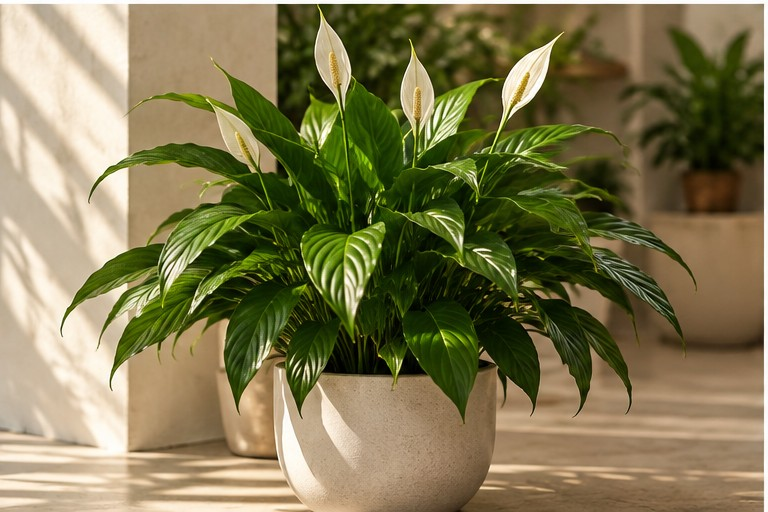

Referência ilustrativa
Buquê em tons suaves
Rosas, folhagens e flores delicadas em uma composição leve.
Flores, arranjos e plantas em Foz do Iguaçu
Consulte opções para presentear, decorar ou montar uma composição do seu jeito. Fale diretamente com a Floricultura JK pelo WhatsApp.

Escolha por categoria
Os itens abaixo são referências visuais desta proposta e podem ser substituídos pelas fotos e pelos produtos reais da loja antes da publicação.
Composições para diferentes ocasiões, cores e estilos.

Referência ilustrativa
Rosas, folhagens e flores delicadas em uma composição leve.
Referência ilustrativa
Uma combinação mais viva para aniversários, agradecimentos e celebrações.
Peças para presentear ou trazer flores para o ambiente.

Referência ilustrativa
Flores claras, rosas e folhagens em vaso de linhas discretas.
Referência ilustrativa
Flores de cores marcantes combinadas com folhagens naturais.
Verde para presentear, decorar e trazer vida para os espaços.

Referência ilustrativa
Uma opção elegante para ambientes internos e para presentear.
Tem algo específico em mente?
Encomendas personalizadas
Preencha as preferências para montar uma mensagem e consultar a Floricultura JK. O envio não confirma disponibilidade nem fecha o pedido.
Contato
Centro de Foz do Iguaçu, na Avenida Juscelino Kubitschek.
Av. Juscelino Kubitschek, 485
Centro · Foz do Iguaçu – PR
(45) 99102-8010
(45) 3523-5600
@floriculturajk
Ver Instagram